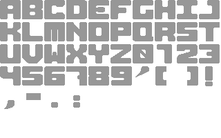
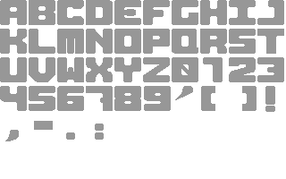

Please wait...
Hello! We wanted to do a demo contribution for the Wild competion for Sommarhack 2023. Unfortunately, we lack musical talent and "borrowed" a great tune which disqualifies us from the competition. However, we wanted to shared this demo in the hope someone likes it.Haiku by ChatGPT
Code by Lance!
Art by GlimGlam and Bing Create
Font by an unknown Amiga pixel god
Music Mental Hotline by Space Buddha
(Borrowed without asking, we lack musical talent but are in admiration of those that have)
The scroll text with greetings is unreadable as called to by tradition. Listing you here instead
 
